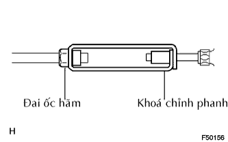

CẦN PHANH TAY > LẮP |
| 1. LẮP CẦN PHANH TAY |
Lắp công tắc vào cần phanh bằng vít.
Lắp giắc nối công tắc.
Lắp cáp vào cân bằng 2 bu lông và 2 đai ốc A.
Bẻ vấu B về vị trí ban đầu của nó.
Lắp cần bằng 2 đai ốc C.
Lắp đai ốc điều chỉnh dây và đai ốc hãm D.
| 2. ĐIỀU CHỈNH HÀNH TRÌNH CẦN PHANH TAY |
 |
Vặn đai ốc điều chỉnh cho đến khi hành trình cần phanh tay chính xác.
Kéo cần phanh tay lên trên với một lực xấp xỉ 200 N (20 kgf, 44 lbf) và tính số tiếng kêu tách
Xiết chặt đai ốc hãm.
| 3. ĐIỀU CHỈNH KHOÁ QUAY CHỈNH PHANH TAY |
|  |
Nới lỏng đai ốc hãm và vặn khoá chỉnh phanh tay cho đến khi hành trình cần phanh tay chính xác.
Xiết chặt đai ốc hãm.
| 4. LẮP HỘP DẦM CÔNG XÔN |
 |
Lắp hộp dầm bằng 2 vít.
Lắp 4 vít và 2 bulông.
| 5. NỐI CÁP VÀO CỰC ÂM ẮC QUY |
| 6. TIẾN HÀNH THIẾT LẬP BAN ĐẦU |
Tiến hành thiết lập ban đầu (Xem trang Kích chuột vào đây).